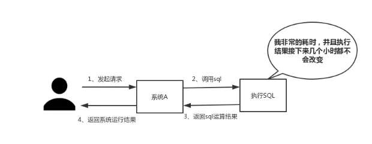

Redis心得
保存文件到笔记
Redis心得
阐述
- 为什么使用Redis？
- 使用Redis有什么缺点？
- 单线程的Redis为什么这么快？
- Redis的数据类型，以及每种数据类型的使用场景
- Redis的过期策略以及内存淘汰机制
- Redis和数据库双写一致性问题
- 如何应对缓存穿透和缓存雪崩问题
- 任何解决Redis的并发竞争Key问题
为什么使用Redis
项目中使用Redis，主要从性能和并发。
当然，Redis还具备分布式锁等其他功能，如果只是为了分布式这些其他功能，完全还有其他中间件，比如ZooKeeper等代替，并非部署非要使用Redis,
redis的线程模型是单线程模型，采用的是IO多路复用技术，每个redis-cli产生的socker都会被被监听，当哪一个socker准备好了产生事件，都会把产生事件的socker放到一个队列里面去，通过这个队列有序、同步，每次读取一个套接字处理socker
性能
如下图所示，我们在碰到需要执行耗时特别久，且结果不频繁变动的SQL，就特别适合将运行结果放入缓存。这样，后面的请求就去缓存中读取，使得请求能够迅速响应。

题外话：迅速影响的标准，根据交互效果不同，这个响应时间没有固定标准。
在理想状态下，我们页面跳转需要在瞬间解决，对于页内操作则需要在刹那间解决。
另外，超过一弹指的耗时操作要有进度提示，并且可以随时中止或取消，这样才能给用户最好的体验
并发
如下图所示，在大并发的情况下，所有的请求直接访问数据库，数据库会出现连接异常。
这个时候，就需要使用Redis做一个缓冲操作，让请求先访问到Redis，而不是直接访问数据库。

使用Redis有什么缺点
常见的四个问题
- 缓存和数据库双写一致性问题
- 缓存雪崩问题
- 缓存击穿问题
- 缓存的并发竞争问题
这四个问题，我个人觉得在项目中是常遇见的，具体解决方案，后文给出。
单线程的Redis为什么这么快
这个问题是对Redis内部机制的一个考察。根据我的面试经验，很多人都不知道Redis是单线程工作模型。所以，这个问题还是应该要复习一下的。
回答：
- 纯内存操作
- 单线程操作，避免了频繁的上下文切换
- 采用了非阻塞I/O多路复用机制
打一个比方：小曲在S城开了一家快递店，负责同城快送服务。小曲因为资金限制，雇佣了一批快递员，然后小曲发现资金不够了，只够买一辆车送快递。
经营方式一
客户每送来一份快递，小曲就让一个快递员盯着，然后快递员开车去送快递。
慢慢的小曲就发现了这种经营方式存在下述问题：
- 几十个快递员基本上时间都花在了抢车上了，大部分快递员都处在闲置状态，谁抢到了车，谁就能去送快递。
- 随着快递的增多，快递员也越来越多，小曲发现快递店里越来越挤，没办法雇佣新的快递员了。
- 快递员之间的协调很花时间。
综合上述缺点，小曲痛定思痛，提出了下面的经营方式。
经营方式二
小曲只雇佣一个快递员。然后呢，客户送来的快递，小曲按送达地点标注好，然后依次放在一个地方。
最后，那个快递员依次的去取快递，一次拿一个，然后开着车去送快递，送好了就回来拿下一个快递。
上述两种经营方式对比，是不是明显觉得第二种，效率更高，更好呢？
在上述比喻中：
- 每个快递员→每个线程
- 每个快递→每个Socket(I/O流)
- 快递的送达地点→Socket的不同状态
- 客户送快递请求→来自客户端的请求
- 小曲的经营方式→服务端运行的代码
- 一辆车→CPU的核数
于是我们有如下结论：
- 经营方式一就是传统的并发模型，每个I/O流（快递）都有一个新的线程（快递员）管理。
- 经营方式二就是I/O多路复用，只有单个线程（一个快递员），通过跟踪每个I/O流的状态（每个快递的送达地点），来管理多个I/O流
下面类比到真实的Redis线程模型，如图所示：

简单来说，就是我们的Redis-client在操作的时候，会产生具有不同事件类型的Socket。
在服务端，有一段I/O多路复用程序，将其置入队列之中。然后，文件事件分派器，依次去队列中取，转发到不同的事件处理器中。
需要说明的是，这个I/O多路复用机制，Redis还提供了Select、Epoll、Evport、Kqueue等多路复用函数库，大家可以自行去了解。
Redis的数据类型与每种数据类型的使用场景
是不是觉得这个问题很基础？我也这么觉得。然而根据面试经验发现，至少百分之八十的人答不上这个问题。
建议，在项目中用到后，再类比记忆，体会更深，不要硬记。基本上，一个合格的程序员，五种类型都会用到。
String
这个没啥好说的，最常规的set/get操作，Value可以是String也可以是数字。一般做一些复杂的计数功能的缓存。
Hash
这里Value存放的是结构化的对象，比较方便的就是操作其中的某个字段。
我在做单点登录的时候，就是用这种数据结构存储用户信息，以CookieId作为Key，设置30分钟为缓存过期时间，能很好的模拟出类似Session的效果。
List
使用List的数据结构，可以做简单的消息队列的功能。另外还有一个就是，可以利用lrange命令，做基于Redis的分页功能，性能极佳，用户体验好。
Set
因为Set堆放的是一堆不重复值的集合，所以可以做全局去重功能，为什么不用JVM自带的Set进行去重
因为我们的系统一般都是集群部署，使用JVM自带SET，比较麻烦，难道为了一个做一个全局去重，再起一个公共服务，太麻烦了。
另外，就是利用交集，并集，差集等操作，可以计算共同喜好，全部的喜好，自己独有的喜好等功能
Sorted Set
Sorted Set 多了一个权重参数Score,集合中的元素能够按Score进行排列。
可以做排行榜应用，取TOP N 操作，Sorted Set 可以用来做延时任务，最后一个应用就是可以做范围查找
Redis 的过期策略以及内存淘汰机制
这个问题相当重要，到底Redis有没用到家，这个问题就可以看出来。
比如你Redis只能存5G数据，可是你写了10G，那会删5G的数据。怎么删的，这个问题思考过么？
还有，你的数据已经设置了过期时间，但是时间到了，内存占用率还是比较高，有思考过原因么?
回答：Redis采用的是定期删除+惰性删除策略。
为什么不用定时删除策略
定时删除，用一个定时器来负责监视Key，过期则自动删除。虽然内存及时释放，但是十分消耗CPU资源。
如果在大并发请求下，CPU要将时间应用在处理请求，而不是删除KEY，因此没有采用这一策略。
定期删除+惰性删除是如何工作？
定期删除，Redis默认每个100ms检查，是否有过期的KEY，有过期KEY责要删除
惰性删除：在获取某个KEY时进行检查，判断是否过期，如果过期就会删除。
采用定期删除+惰性删除就没有其他问题了么？
注意：如果定期删除没有删除KEY，然后也没能及时去获取请求的KEY，也就是说惰性删除也没有生效，这样，Redis的内存会越来越高，那么就应答采用内存淘汰机制。
在redis.conf中有一行配置：
# maxmemory-policy volatile-lru
该配置就是配内存淘汰策略的：
allkeys-lru:当内存不足以容纳新写入数据时，在健空间中移除最近最少使用的KEY。
- noeviction：当内存不足以容纳新写入数据时，新写入操作会报错。应该没人用吧。
- allkeys-lru：当内存不足以容纳新写入数据时，在键空间中，移除最近最少使用的Key。推荐使用，目前项目在用这种。
- allkeys-random：当内存不足以容纳新写入数据时，在键空间中，随机移除某个Key。应该也没人用吧，你不删最少使用Key，去随机删。
- volatile-lru：当内存不足以容纳新写入数据时，在设置了过期时间的键空间中，移除最近最少使用的Key。这种情况一般是把Redis既当缓存，又做持久化存储的时候才用。不推荐。
- volatile-random：当内存不足以容纳新写入数据时，在设置了过期时间的键空间中，随机移除某个Key。依然不推荐。
- volatile-ttl：当内存不足以容纳新写入数据时，在设置了过期时间的键空间中，有更早过期时间的 Key优先移除。不推荐。
任何应对缓存穿透和缓存雪崩问题
本内容由用户通过“有道云笔记”发布，并不代表有道的立场
Scarcity_
(29)
(0)
分享于 2018.08.01
评论

立即下载